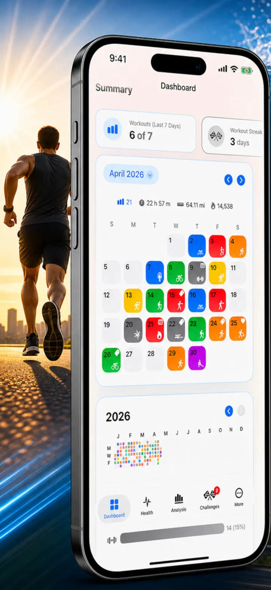
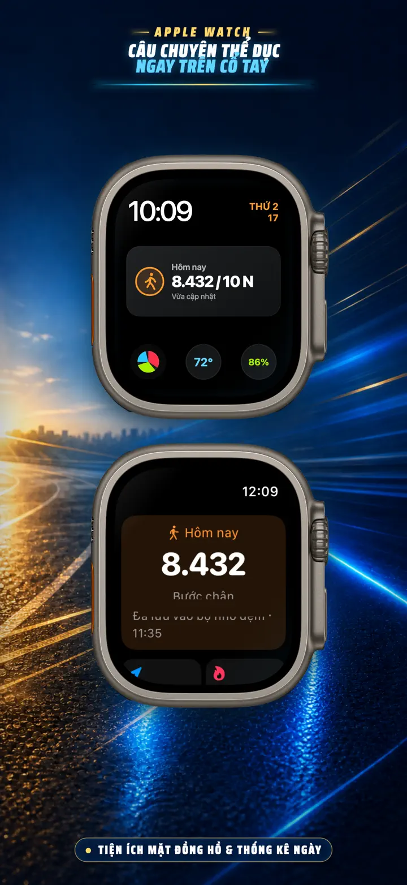
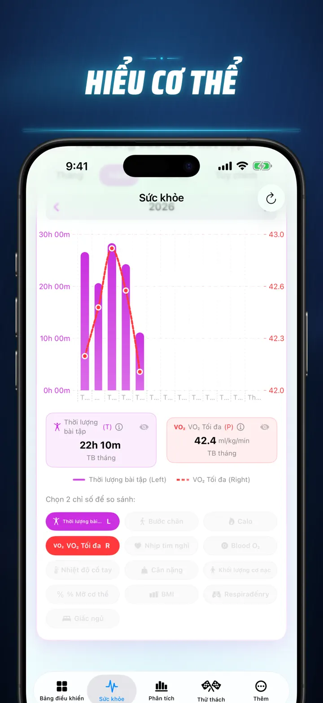
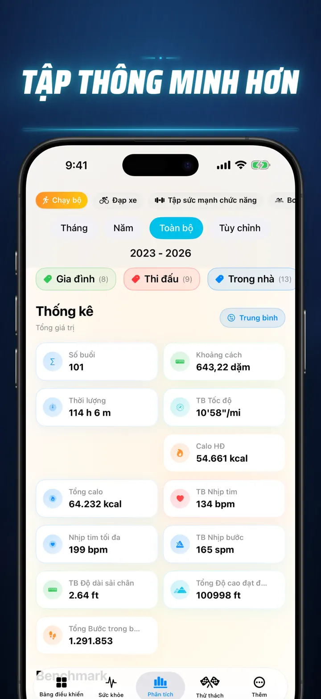
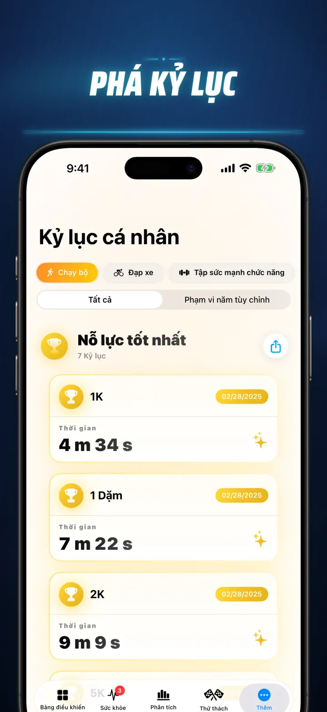
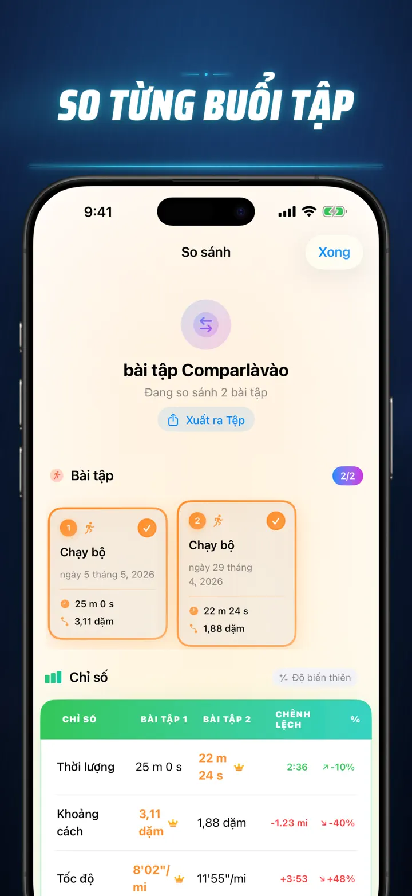
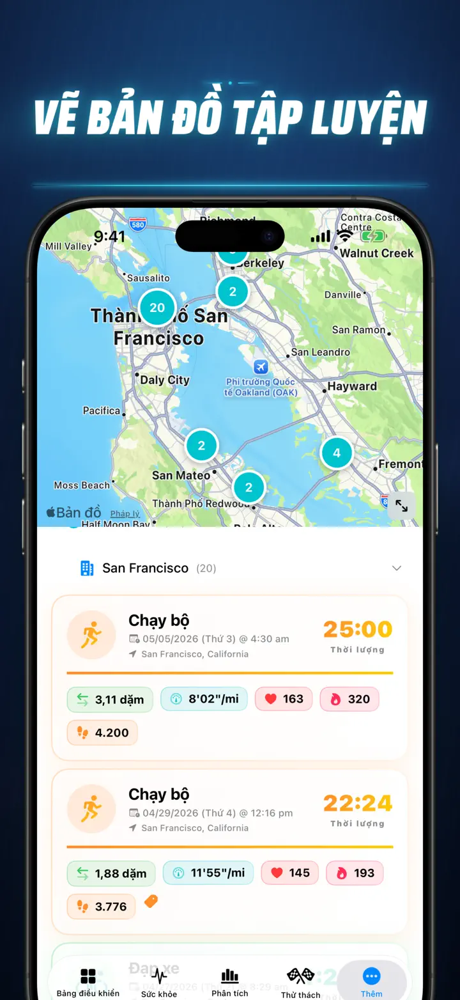
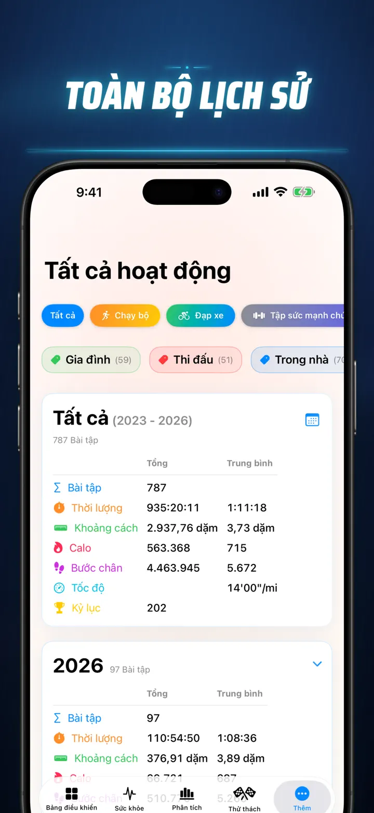

Câu Chuyện Thể Dục
Khám phá dữ liệu tập luyện
Đã có trên Apple Watch: số bước hôm nay trên mọi mặt đồng hồ, cùng màn hình Hôm nay với khoảng cách, calo và số tầng — thẳng từ Apple Health.
Tải xuống từ App Store
Giới thiệu ứng dụng
Đừng đoán mò. Hãy nắm rõ. Câu Chuyện Thể Hình biến dữ liệu Apple Health của bạn thành bản phân tích chi tiết và mạnh mẽ nhất trên iOS. Không tài khoản. Không máy chủ. Chỉ có hành trình thể hình của bạn — được trực quan hóa hoàn toàn.
Dù bạn theo dõi giấc ngủ, phân tích nhịp chạy hay chinh phục kỷ lục marathon — đây chính là bảng điều khiển toàn diện xứng đáng với nỗ lực của bạn.
Hoạt động với mọi thiết bị hoặc ứng dụng đồng bộ với Apple Health — Apple Watch, Garmin, Polar, Suunto, Zwift và nhiều hơn nữa.
PHÂN TÍCH CHUYÊN NGHIỆP
- Biểu đồ xu hướng & chuẩn đối sánh: Sử dụng biểu đồ Box-and-Whisker để xem trung vị, tứ phân vị và giá trị ngoại lệ cho từng loại thể thao.
- Phân tích chi tiết: Lọc lịch sử theo thời gian trong ngày, khoảng cách, thời lượng, tốc độ, độ cao, nhịp bước và độ dài sải chân.
- Xếp hạng mọi thứ: Chỉ một chạm để xếp hạng chỉ số hôm nay (khoảng cách, tốc độ, nhịp tim...) so với toàn bộ lịch sử. Biết ngay nếu bạn đạt hiệu suất "Top 15%".
- Biểu đồ đóng góp: Bản đồ nhiệt kiểu GitHub cho toàn bộ lịch sử tập luyện. Lật để xem thống kê chi tiết từng ngày.
BÀI TẬP ĐƯỢC TÁI HÌNH DUNG
- Bản đồ thông minh: Tô màu lộ trình ngoài trời theo tốc độ, độ cao hoặc vùng nhịp tim. (Hỗ trợ hiệu chỉnh bản đồ Trung Quốc).
- Phân tích split chuyên sâu: Xem các split theo KM hoặc Mile với tốc độ, độ cao, nhịp tim và nhịp bước cho từng vòng.
- Vùng nhịp tim: Trực quan hóa thời gian ở vùng tùy chỉnh 1–5 dựa trên tuổi và nhịp tim nghỉ.
- Ngữ cảnh phong phú: Thêm ảnh, ghi chú định dạng, đánh giá nỗ lực (1–10) và thẻ tùy chỉnh cho mỗi bài tập.
TRUNG TÂM ĐIỀU KHIỂN SỨC KHỎE
- Mọi chỉ số Apple Watch đo được, trực quan hóa tại một nơi với xu hướng ngày, tuần và năm:
- Tim mạch: Nhịp tim nghỉ, VO2 Max (điều chỉnh theo tuổi), nồng độ oxy máu và nhịp thở.
- Thành phần cơ thể: Cân nặng, tỷ lệ mỡ, khối lượng cơ nạc và BMI với chỉ báo xu hướng.
- Hoạt động & phục hồi: Bước chân (phân tích theo giờ), calo hoạt động so với calo cơ bản, và biến thiên nhiệt độ cổ tay.
- Theo dõi giấc ngủ nâng cao: Trực quan hóa các giai đoạn sâu, Core, REM và thức giấc từng đêm.
- Chồng chéo tương quan: Kết hợp nhiều chỉ số sức khỏe để thấy giấc ngủ ảnh hưởng nhịp tim hay cân nặng tác động VO2 Max như thế nào.
SO SÁNH & CẠNH TRANH
- So sánh bài tập: Chọn tối đa 10 bài tập để so sánh song song. Xem phần trăm chênh lệch (ví dụ: "+1,5% nhanh hơn") cho mọi chỉ số, theo từng split!
- Xuất so sánh: Muốn phân tích với công cụ khác? Xuất dữ liệu so sánh bài tập của bạn!
- Kỷ lục cá nhân: Tự động theo dõi cho 1K, 5K, 10K, bán marathon, marathon và khoảng cách tùy chỉnh. Nhận cúp Vàng, Bạc và Đồng.
- Dòng thời gian: Bản tin thời gian của mọi cột mốc, kỷ lục và bài tập bạn từng hoàn thành.
DỮ LIỆU CỦA BẠN — Ở KHẮP NƠI
- Bản đồ toàn cầu: Xem mọi nơi bạn từng tập luyện trên bản đồ thế giới tương tác với phân cụm.
- Xuất dữ liệu mạnh mẽ: Xuất toàn bộ lịch sử (hoặc khoảng thời gian tùy chọn) sang CSV hoặc JSON. Bao gồm dữ liệu split đầy đủ, chỉ số cơ thể và metadata.
- Đồng bộ iCloud: Mục yêu thích, thẻ, ghi chú và đánh giá đồng bộ tức thì trên tất cả thiết bị.
- Quyền riêng tư là trên hết: Không máy chủ ẩn. Dữ liệu nằm trên thiết bị và iCloud riêng của bạn.
- Mồ hôi của bạn kể một câu chuyện. Đã đến lúc đọc nó. Tải Câu Chuyện Thể Hình ngay hôm nay.
Tải Câu Chuyện Thể Hình và khám phá tiềm năng của bạn!
Privacy Policy: https://masawata.net/privacy-policy.html Terms Of Service: https://www.apple.com/legal/internet-services/itunes/dev/stdeula/
Ảnh chụp màn hình







Câu Chuyện Thể Dục
Đã có trên Apple Watch: số bước hôm nay trên mọi mặt đồng hồ, cùng màn hình Hôm nay với khoảng cách, calo và số tầng — thẳng từ Apple Health.
Tải xuống từ App Store